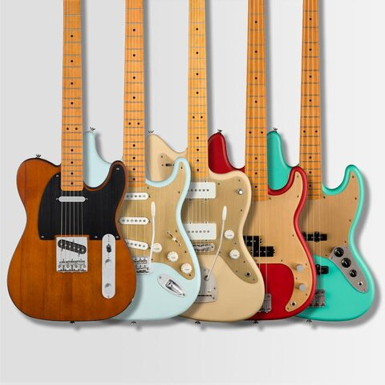
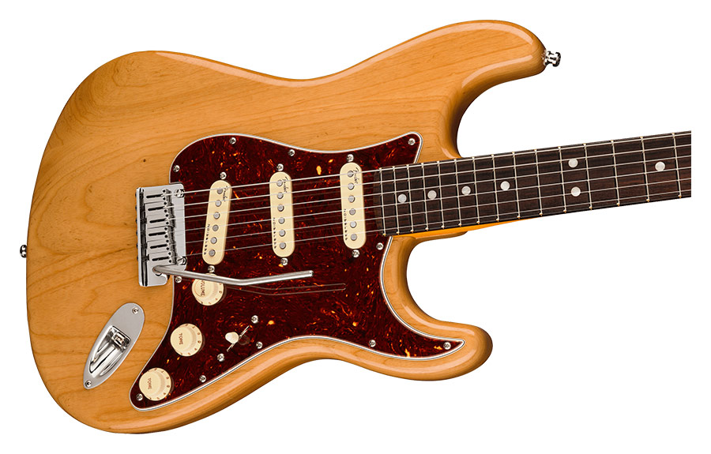

The Fender Legacy
Classic American Sound
Fender guitars have shaped the sound of modern music for decades. From the iconic Stratocaster to the Telecaster, Fender instruments are known for their bright, clear tones and unmatched playability. Musicians across genres, from rock and blues to country and jazz, have relied on Fender for their signature sound. The company’s commitment to innovation and quality has made it a household name among guitarists worldwide.
The craftsmanship behind every Fender guitar ensures reliability and performance on stage and in the studio. With a wide range of models and finishes, Fender offers something for every player. Whether you’re a beginner or a seasoned professional, the versatility and style of Fender guitars make them a top choice for musicians everywhere.
 